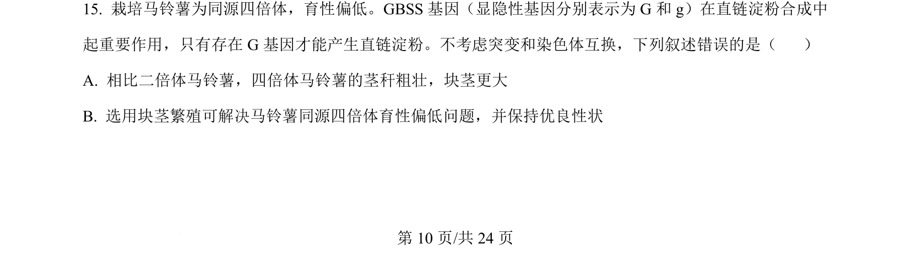
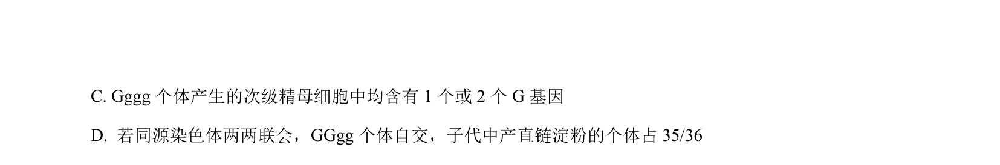
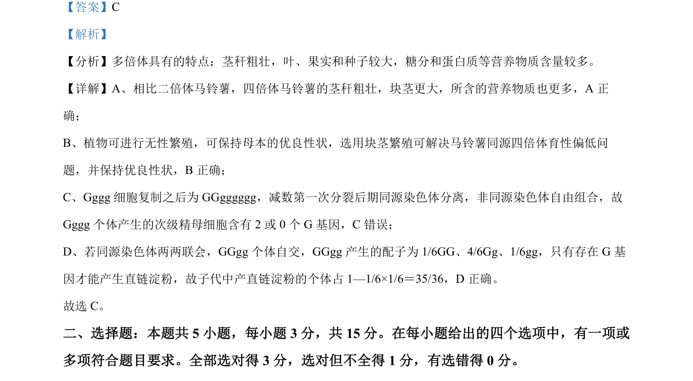

2024-辽宁-15
吉林2024卷辽宁不分题15题型填空难中
考点：染色体组 无性生殖 遗传育种
题面


摘要
本题以马铃薯育种为情境，考查同源四倍体的特点及无性繁殖的应用。
关联考点
答案与解析

📄 原 PDF 第 10 页：素材/真题/吉林/2008-2024·（吉林）生物高考真题/2024年高考生物试卷（辽宁）（解析卷）.pdf
题干文本
- 栽培马铃薯为同源四倍体，育性偏低。GBSS 基因（显隐性基因分别表示为 G 和 g）在直链淀粉合成中
起重要作用，只有存在 G 基因才能产生直链淀粉。不考虑突变和染色体互换，下列叙述错误的是（ ）
A. 相比二倍体马铃薯，四倍体马铃薯的茎秆粗壮，块茎更大
B. 选用块茎繁殖可解决马铃薯同源四倍体育性偏低问题，并保持优良性状
解析文本